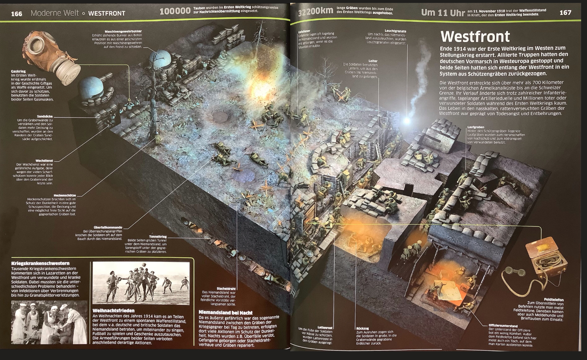

Erster Weltkrieg
1914 – 1918: Die Urkatastrophe
Einleitung
Der Erste Weltkrieg markiert den Übergang zur modernen Massenvernichtung. In dieser Zusammenfassung analysieren wir die radikale Transformation von der militärischen Taktik bis hin zur totalen Mobilisierung der Zivilbevölkerung.
- Industrialisierter Stellungskrieg
- Heimatfront & Hindenburg-Programm
- Rolle der Frau & Soziale Not
- Propaganda als psychologische Waffe
- Das Epochenjahr 1917
Die Westfront

Abbildung: Der starre Verlauf der Westfront nach 1914.
Vom Schlieffen-Plan zum Stellungskrieg
Der deutsche Schlieffen-Plan sah vor, Frankreich durch eine schnelle Umfassung über Belgien niederzuwerfen. Mit dem Scheitern an der Marne (1914) verwandelte sich der Krieg in einen 700 km langen Stellungskrieg.
Der US-Kriegsberichterstatter Arthur Ruhl dokumentierte 1915 die brutale Realität: In engen Schützengräben waren Soldaten permanentem Artilleriebeschuss und Maschinengewehrfeuer ausgesetzt. Die Anonymität des Todes durch "Trommelfeuer" ersetzte den klassischen Zweikampf.
In den sogenannten Abnutzungsschlachten (Verdun, Somme) wurde der Mensch zum bloßen "Material" degradiert. Ziel war das physische Ausbluten des Gegners ohne Rücksicht auf eigene Verluste.
Industrialisierter Krieg
Zum ersten Mal entschied die Produktionskraft der Fabriken über das Schicksal an der Front. Es war ein Krieg der Ingenieure und Chemiker.
- Gaskrieg: Der erste Einsatz von Giftgas (Ypern 1915) leitete eine neue Ära des chemischen Terrors ein.
- Feuerkraft: Die Artillerie verursachte ca. 75 % aller Verluste. Millionen von Granaten verwandelten die Schlachtfelder in Mondlandschaften.
- Tanks & Luftwaffe: Britische Panzer (Mark IV) durchbrachen ab 1917 die starren Linien. Zeppeline und Flugzeuge brachten den Krieg erstmals direkt in die zivilen Städte.
- U-Boot-Krieg: Deutschlands Versuch, England durch den uneingeschränkten U-Boot-Krieg auszuhungern, provozierte den Kriegseintritt der USA.
Heimatfront & Hindenburg

Das Hindenburg-Programm (1916)
Unter der Führung von Paul von Hindenburg und Erich Ludendorff (OHL) wurde die totale Mobilisierung ausgerufen. In einer Denkschrift forderte Hindenburg, dass jede andere Rücksicht hinter die Rüstungsproduktion zurücktreten müsse. Der Staat wurde zur Militärdiktatur umgebaut.
Hunger und soziale Not
Die britische Seeblockade führte zum verheerenden Steckrübenwinter 1916/17. Während die Industrie Rekorde feierte, verhungerten im Inland ca. 700.000 Menschen. Dies gipfelte im Januarstreik 1918, als über 1 Million Arbeiter unter dem Slogan "Frieden und Brot" streikten.
Frauen ersetzten Männer in der Rüstungsindustrie und erhielten 1918 das Wahlrecht. Dennoch litten sie unter extremer Doppelbelastung und Hunger. Nach 1918 wurden sie meist gewaltsam aus den Berufen verdrängt – sie waren eher Leidtragende als Gewinnerinnen.
Propaganda & Medien

Propaganda wurde zur "vierten Waffe". Ihr Ziel: Mobilisierung, Legitimation und Entmenschlichung des Feindes.
- Feindbilder: US-Plakate wie "Destroy this mad brute" zeigten den deutschen Soldaten als blutrünstigen Gorilla. Damit wurde der Krieg moralisch als Kampf der Zivilisation gegen die Barbarei gerechtfertigt.
- Mobilisierung: Bürger wurden emotional gedrängt, Kriegsanleihen zu kaufen, um den Staat zu finanzieren.
- Zensur: Briefe von Soldaten (Feldpost) wurden kontrolliert, um die Kriegsmüdigkeit an der Heimatfront zu unterdrücken.
1917: Das Epochenjahr
Zwei Ereignisse veränderten die Weltgeschichte dauerhaft:
2. Russische Revolution: Russland schied nach der Oktoberrevolution aus (Friede von Brest-Litowsk). Deutschland konnte Truppen nach Westen schieben, doch gegen die USA reichte dies nicht mehr aus.
Ende 1918 führten die militärische Erschöpfung und die Novemberrevolution zum Sturz des Kaisers. Die OHL verbreitete später die Dolchstoßlegende, um die Verantwortung für die Niederlage auf die Demokraten abzuwälzen.